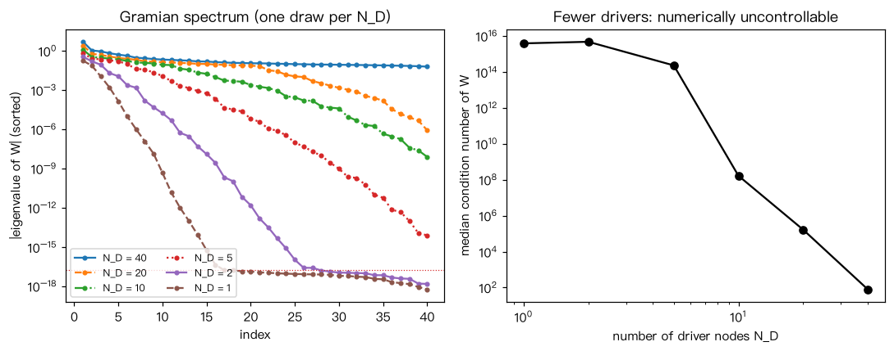

Example07 / 12
控制能量、Gramian 条件数与“理论可控、数值不可控”
无向网络的稳定线性系统 A = -(L + 0.1 I)（L 为拉普拉斯矩阵），随机选 N_D 个驱动节点， 用 Lyapunov 方程 A W + W A^T + B B^T = 0 求无限时域可控性 Gramian W。 最小能量的上下界分别是 1/lambda_min(W) 与 1/lambda_max(W)（Yan 等 2012）；W 的条件数决定数值上能否求逆。 解读：驱动节点减少时，最难方向的能量与条件数近似指数增长（Yan 等 2015 的 E_max ~ e^{N/N_D}）； 只驱动 1–2 个节点时 W 的最小特征值已低于双精度可分辨的量级（约 1e-16 倍最大特征值），算出负值： 此时数值上已无法判断是否可控，更谈不上实际操控。
Output输出图

Output文字输出
N_D = 40：lambda_min(W) 中位数 = 6.30e-02（E_max ~ 1.6e+01），条件数中位数 = 7.9e+01，算出非正特征值 0/10 次 N_D = 20：lambda_min(W) 中位数 = 1.52e-05（E_max ~ 6.6e+04），条件数中位数 = 1.7e+05，算出非正特征值 0/10 次 N_D = 10：lambda_min(W) 中位数 = 7.78e-09（E_max ~ 1.3e+08），条件数中位数 = 1.7e+08，算出非正特征值 0/10 次 N_D = 5：lambda_min(W) 中位数 = 2.88e-15（E_max ~ 3.5e+14），条件数中位数 = 2.3e+14，算出非正特征值 0/10 次 N_D = 2：lambda_min(W) 中位数 = -6.88e-17（E_max ~ 无法求逆），条件数中位数 = 4.7e+15，算出非正特征值 10/10 次 N_D = 1：lambda_min(W) 中位数 = -7.20e-17（E_max ~ 无法求逆），条件数中位数 = 3.9e+15，算出非正特征值 10/10 次
Code代码
# 无向网络的稳定线性系统 A = -(L + 0.1 I)（L 为拉普拉斯矩阵），随机选 N_D 个驱动节点，
# 用 Lyapunov 方程 A W + W A^T + B B^T = 0 求无限时域可控性 Gramian W。
# 最小能量的上下界分别是 1/lambda_min(W) 与 1/lambda_max(W)（Yan 等 2012）；W 的条件数决定数值上能否求逆。
# 解读：驱动节点减少时，最难方向的能量与条件数近似指数增长（Yan 等 2015 的 E_max ~ e^{N/N_D}）；
# 只驱动 1–2 个节点时 W 的最小特征值已低于双精度可分辨的量级（约 1e-16 倍最大特征值），算出负值：
# 此时数值上已无法判断是否可控，更谈不上实际操控。
import numpy as np
import networkx as nx
from scipy.linalg import solve_continuous_lyapunov
N = 40
G = nx.connected_watts_strogatz_graph(N, 4, 0.2, seed=1)
A = -(nx.laplacian_matrix(G).toarray().astype(float) + 0.1 * np.eye(N))
rng = np.random.default_rng(0)
spectra, cond_med = {}, []
for ND in [40, 20, 10, 5, 2, 1]:
lmins, conds = [], []
for rep in range(10):
drv = rng.choice(N, ND, replace=False)
B = np.zeros((N, ND)); B[drv, np.arange(ND)] = 1.0
W = solve_continuous_lyapunov(A, -B @ B.T)
ev = np.linalg.eigvalsh((W + W.T) / 2)
lmins.append(ev[0]); conds.append(ev[-1] / max(abs(ev[0]), 1e-300))
lm = np.median(lmins)
emax = "%8.1e" % (1 / lm) if lm > 0 else "无法求逆"
print("N_D = %2d：lambda_min(W) 中位数 = %9.2e（E_max ~ %s），条件数中位数 = %8.1e，算出非正特征值 %d/10 次"
% (ND, lm, emax, np.median(conds), sum(l <= 0 for l in lmins)))
spectra[ND] = ev; cond_med.append(np.median(conds))
import matplotlib.pyplot as plt
fig, (ax1, ax2) = plt.subplots(1, 2, figsize=(10, 4))
for ND, ls in zip(spectra, ["-", "--", "-.", ":", "-", "--"]):
ev = np.sort(np.abs(spectra[ND]))[::-1]
ax1.semilogy(np.arange(1, N + 1), ev, ls=ls, marker=".", label="N_D = %d" % ND)
ax1.axhline(1e-16 * max(np.abs(spectra[1])), c="tab:red", lw=0.8, ls=":")
ax1.set_xlabel("index"); ax1.set_ylabel("|eigenvalue of W| (sorted)"); ax1.legend(fontsize=8, ncol=2)
ax1.set_title("Gramian spectrum (one draw per N_D)")
ax2.semilogy(list(spectra), cond_med, "ko-")
ax2.set_xscale("log"); ax2.set_xlabel("number of driver nodes N_D"); ax2.set_ylabel("median condition number of W")
ax2.set_title("Fewer drivers: numerically uncontrollable")
plt.tight_layout(); plt.show()Run在浏览器中运行
首次加载 Python 环境约需 20–40 秒；可以修改参数后重新运行。